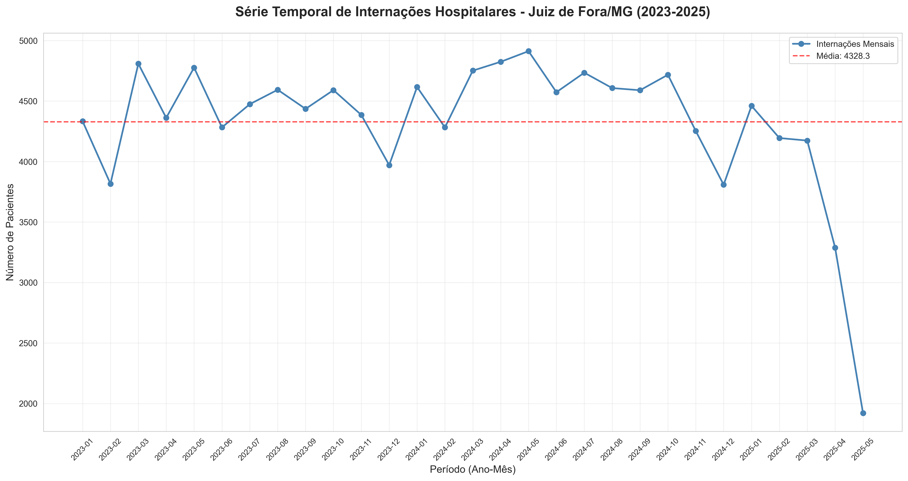
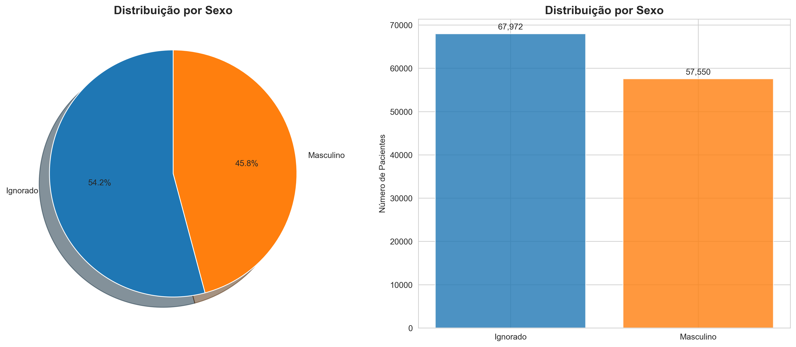
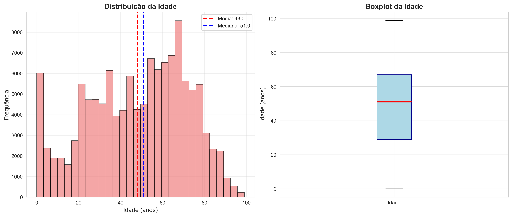
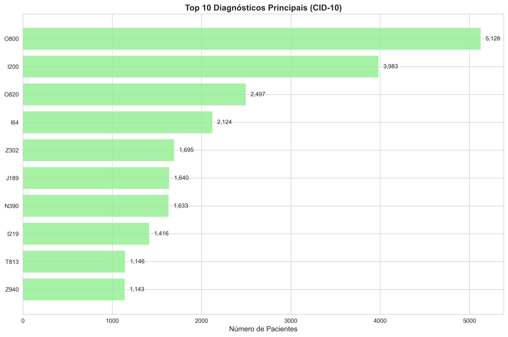
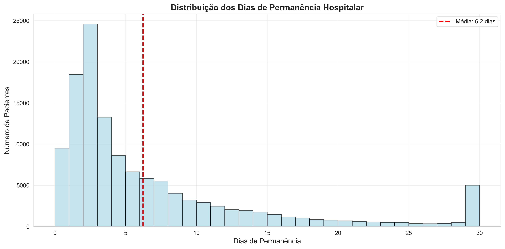
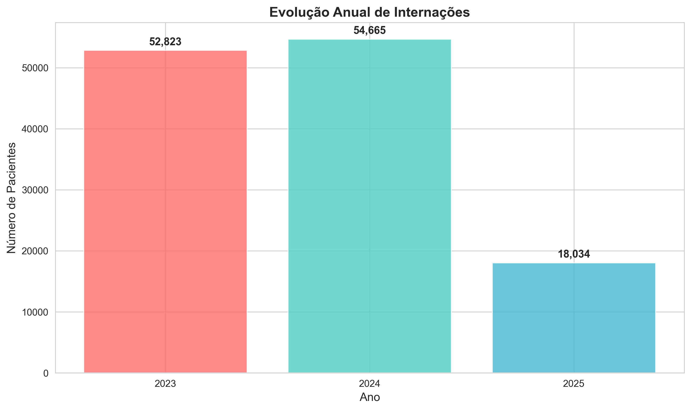
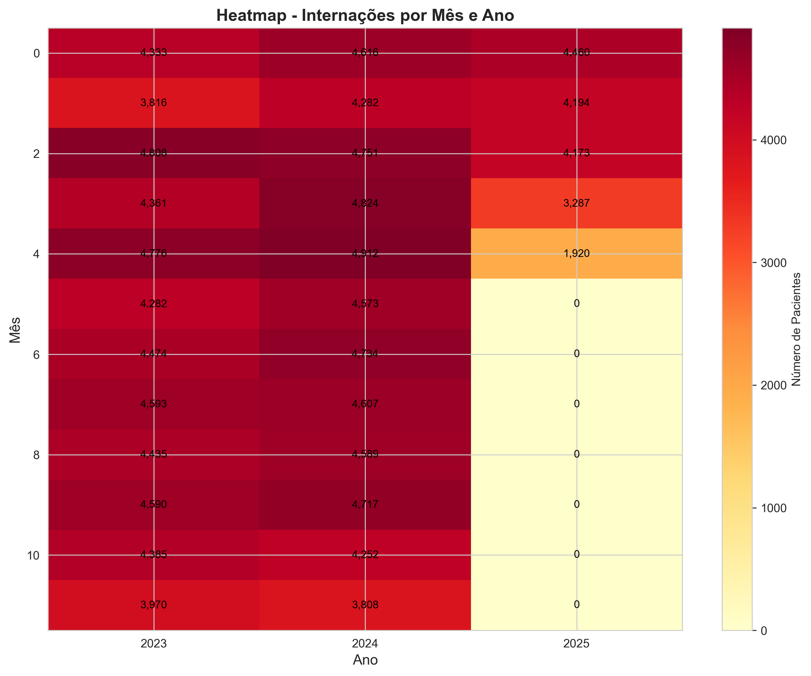
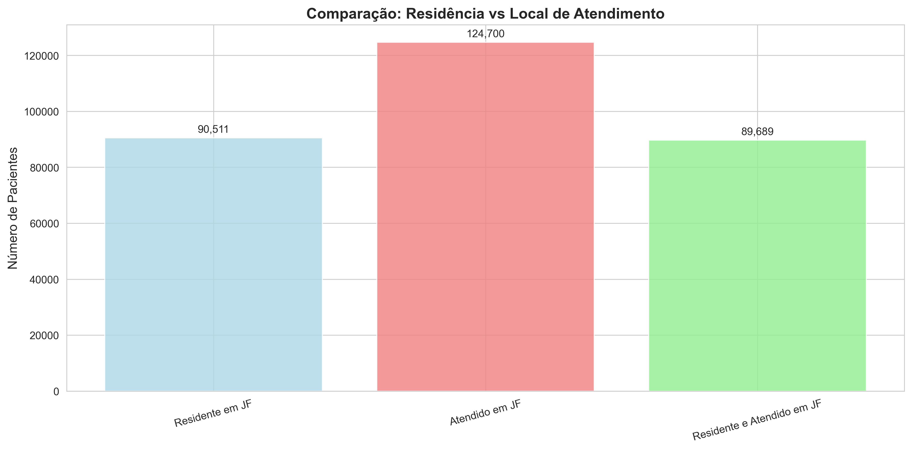

1. Série Temporal Mensal de Internações

2. Distribuição dos Pacientes por Sexo

3. Distribuição dos Pacientes por Idade

4. Top 10 Diagnósticos Principais (CID-10)

5. Distribuição dos Dias de Permanência Hospitalar

6. Evolução Anual das Internações

7. Heatmap de Internações por Mês e Ano

8. Comparação: Residência vs Local de Atendimento
